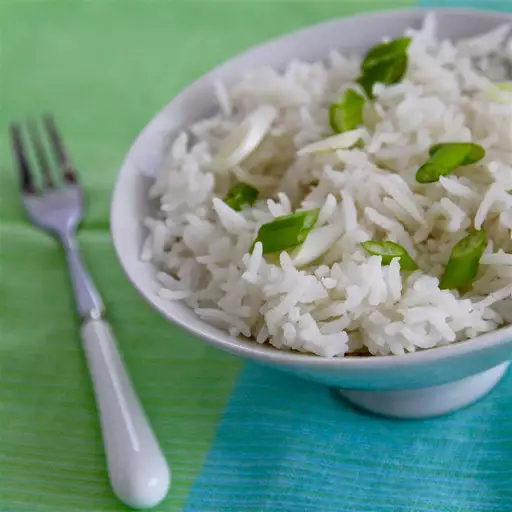

Pilaf

Try this baked rice pilaf for a perfect batch of white rice made without a rice cooker. Once you see how incredibly delicious and foolproof this method is, you'll never cook rice on the stovetop again.
Ingredients
- 2 Tablespoons Butter
- 2 Tablespoons Olive Oil
- Half Medium Onion, Chopped
- 2 Cups Long-grain White Rice
- 3 Cups Chicken Stock
- Half a Teaspoon of Salt
- Quarter a Teaspoon Cayenne Pepper
- 1 Pinch Saffron (Optional)
Steps To Make Pilaf
- Preheat the oven to 350 degrees F (175 degrees C).
- Melt butter and oil in a large saucepan over medium heat. Add onion; cook and stir until lightly browned, 7 to 8 minutes. Remove from the heat.
- Place rice into a 9x13-inch casserole dish. Add onion and stir until rice is thoroughly coated. Place the dish on a baking sheet.
- Combine chicken stock, salt, cayenne pepper, and saffron in a saucepan. Bring to a boil, then reduce the heat to low and simmer for 5 minutes.
- Pour stock mixture over rice in the baking dish and stir to combine. Spread mixture evenly along the bottom of the pan and cover tightly with heavy-duty aluminum foil.
- Bake in the preheated oven for 35 minutes. Remove from the oven and allow to rest, covered, for 10 minutes. Remove the foil and fluff rice with a fork.